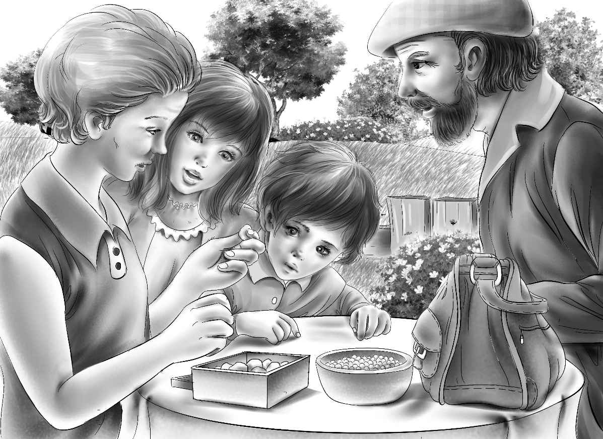

Sam drove home slowly. Violet and Benny sat on the front seat. This made room for Andy on the back seat with Henry and Jessie.
"Now the next thing is to tell Aunt Jane," said Jessie."I am worried about that."
"Oh,that will be easy," said Andy Bean."I'll tell her myself."
"What will you tell her?" Violet asked softly.
"Well,I came home to Boston on a ship. I saw in the paper that the Aldens had bought the old house. So I thought I'd come up and see if I was welcome. I knew Willie would keep my secret. He knew me right away."
"You were the one stealing all those eggs!" said Benny.
Andy laughed. "Well,they were really my own eggs,you see. Half that Bean farm belongs to me."
"What will your brother say?" asked Henry."You have been away so long."
"I don't want the farm," Andy said. "Don't you worry about me. The only thing is Jane. If she wants me to stay,that's all I care about."
They soon drove up to their own back door."Oh,dear!" said Violet,"This is going to be so hard for Aunt Jane. She thinks you may be dead. She isn't very strong."
"That's one reason I came home," said Andy. "I'm strong enough for two."
And he looked it.
Aunt Jane was sitting in her long chair in the back yard. She was shelling peas. She looked up at the children. Then she saw the stranger smiling at her. Her face changed. She cried,"Andy! Andy! You did come back! Henry,get a chair!"
"I don't need a chair,Jane," said Andy. He went over to the little lady and took her hand. "Glad to see me,Jane?"
"Oh,yes! I'd know you anywhere. Will you stay?"
"You bet I'll stay!" said the tall man."I have a long story to tell. But first I have something for you. Everywhere I went,I bought one of these for you."
He took the pan of shelled peas out of her lap and gave her a small bag. "Open it."
The children sat down on the grass. Andy sat down beside Aunt Jane. He did not seem old at all. Aunt Jane opened the bag and took out a box. She opened the box and looked in.
"They look like old,old stones," said Benny.
"Very good,young feller," said Andy."That's just what they are. Old,old stones." He laughed.
Aunt Jane picked one up and looked at it carefully. It was not round. It was not square. It was very different looking. But Jessie saw a flash as the stone turned. "It's blue!" she said.
"Yes,that one is blue," said Andy."It's a sapphire. These stones are not cut. Just as they came from the ground. I got that one in India. Everywhere I went,I bought you a jewel,Jane. Look at this one!" He picked up a stone that flashed green.
"An emerald!" said Aunt Jane."It is enormous! These must have cost you a fortune,Andrew."
"Well,I didn't want a fortune," said Andy."I wanted adventure. But now I'm through with adventure."
"I don't believe a word of it!" cried Aunt Jane,but she looked at Andy proudly.
Benny said,"Why didn't you come home long ago?"
Andy said with a crooked smile,"You wouldn't believe me if I told you."
"Yes,I would," said Benny nodding his head.
"I was afraid of Jane," said Andy,speaking quietly."She's a tiny little thing,but I was afraid of her. And she left,too,to go out West. What was there to come back for?"
Jessie said,"I can understand. If Aunt Jane turned you down,you'd have nothing to live for."
"That is exactly right,young lady," cried Andy. "You have a lot of good sense."
Aunt Jane looked at the jewels one by one."For me?" she said."I don't need them all. Andy,let's have the children each choose one to keep. I want them each to have a jewel."
"Oh,boy!" said Benny."I can tell you what everyone will choose."
"All right. Go ahead,boy," said Andy.
"Jessie will take a blue sapphire,Violet will take a purple amethyst,Henry will take a green emerald,and I will take a red ruby."
"Right!" shouted everyone.
"There is a fortune in that box,sure enough," said Andy."But I found something under the woodshed that I think is more exciting."
"Always looking for excitement,Andy,"said Aunt Jane smiling.
"Yes,I suppose I always will be," said Andy. "But I am glad to stay at home now. I shall find plenty of excitement right here."
"When are you going to show us what you found in the woodshed?" asked Benny.
"Oh,let's wait!" Jessie said,looking at Aunt Jane and Andy Bean."I'm sure that everyone is hungry."
"Thank you," said Andy."I am hungry. What I found can wait a little longer."
"Mercy!" cried Aunt Jane. "Andy's hungry! Benny,run and tell Maggie to have lunch just as soon as she can."

"No eggs!" Andrew called after him."I'm sick of eggs."
"I'll tell Maggie," shouted Benny. "But I'm sure lunch isn't all eggs anyway!"